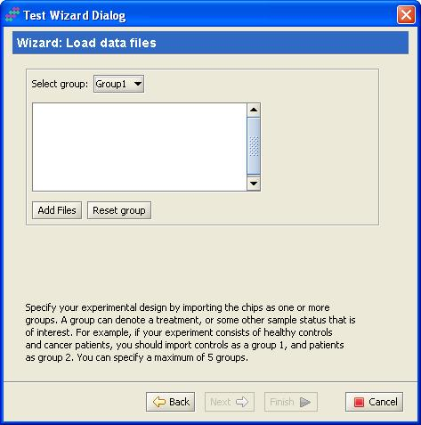
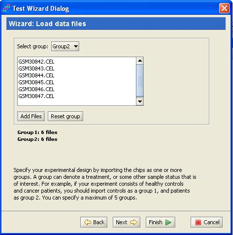
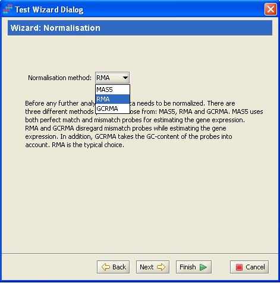
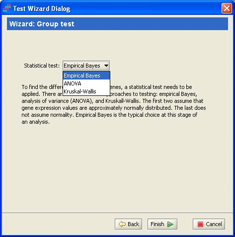
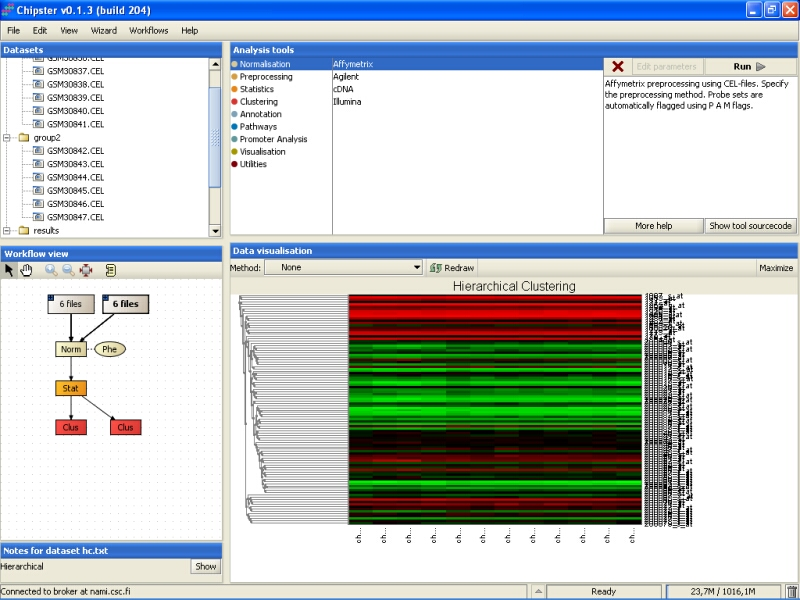
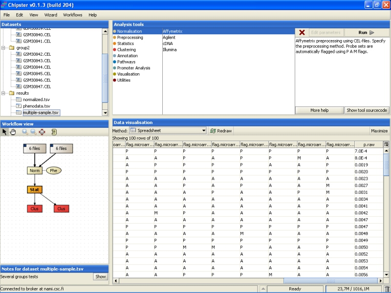
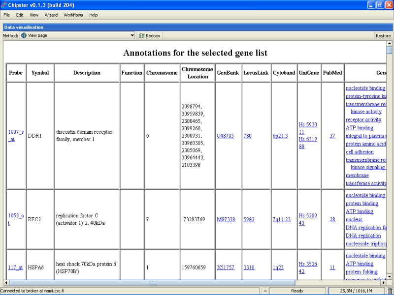

Affymetrix wizard lets the user to import and preprocess the data fast. In addition, it finds the genes that differentiate the experimental groups, and draws a heatmap of hierarchical clustering of differentially expressed genes.
Go to the Wizard -menu, and select Affymetrix. A new window opens:

Click on the Next -button to see the data import step appear.
In this data import step you should define the groups your data files you belong to. You can change the group from the pull-down menu on the top. You can define a maximum of five different groups. Groups can define anything biologically interesting, for example, different control and treatment groups.
After selecting the group, click on the Add files -button to load the data files into that group. Once all the groups are defined, click on the Finish -button to run the analysis with default options, or click on the Next -button to change other analysis options.
In the next step you can change the normalization options. There is a selection of three methods: MAS5, RMA, and GCRMA. MAS5 uses both perfect match and mismatch probes when calculating the expression values. It produces values that have a high accuracy but low precision. RMA disregards the mismatch probes while calculating the expression values, and has a low accuracy, but high precision. GCRMA works as RMA, but uses the probe sequences to control for sequence-based artifacts in the expression values. RMA is a typical choice, since it has nice statistical properties.
After specifying the normalization option, click on the Finish -button to run the statistical test with default value, or the Next- button to change the test options.
At this stage, you can change the statistical test you want to use. Empirical Bayes uses a moderated t-statistic to generate p-values for the genes. ANOVA uses the traditional one-way analysis of variance to find the differentially expressed genes. Kruskall-Wallis is a non-parametric equivalent to ANOVA, if you don't want to assume that the gene expression values are normally distributed (something ANOVA takes for granted). Empirical Bayes is the typical choice here.
After specifying the statistical test, click on the Finish-button to start the analyses.
Once the analysis is ready the results are displayed on the screen. Close the dialogue box to inspect the results.
By default, a heatmap with red and green coloring is opened.
The wizard returns all the genes that have the Benjamini and Hochberg's false discovery rate less than 0.05. If no such genes are found, hundred most significant genes are returned. To figure out what type of genes are returned, select the statistical test results, and visualize them as a spreadsheet. The title of the last column in the file is called p.adjusted, if the returned genes are significant by FDR<0.05. If the column is called p.raw, then the 100 most significant genes are returned.
User if free is run any further analyses with the normalized dataset, since the analysis run by the wizard could have been done by hand, also. Therefore, the returned data structures are directly suitable for further analyses, such as annotation of the reported genes:
